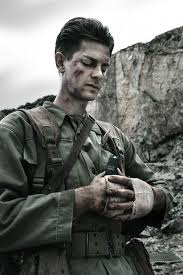
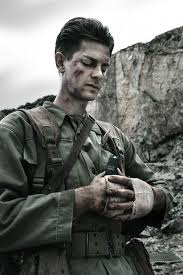

Sinopse
Até o Último Homem conta a história de Desmond Doss, um jovem soldado norte-americano que, por motivos religiosos, recusou-se a portar armas durante a Segunda Guerra Mundial. Mesmo sem atirar uma bala, Doss se destacou como auxiliar médico de combate e salvou dezenas de companheiros em Okinawa. O filme mostra tanto o treinamento e o preconceito que ele enfrentou quanto sua coragem extraordinária no campo de batalha.
Destaques do Filme
- Diretor: Mel Gibson
- Protagonista: Andrew Garfield (Desmond Doss)
- Gênero: Drama biográfico / Guerra
- Prêmios: Vencedor de Oscars técnicos (mixagem de som e edição) e várias indicações.
Análise rápida
O filme combina cenas de guerra intensas com um retrato humano do protagonista. Tema central: a força da convicção pessoal em meio à brutalidade do conflito.

 
